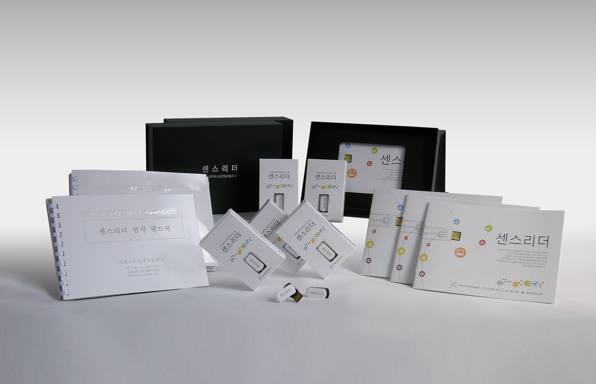

센스리더는 사용자가 스스로 자신의 컴퓨터 사용 패턴과 용도에 맞게 제품을 선택할 수 있도록 세 가지 형태의 버전을 공급합니다.
윈도우즈7 이상의 32/64비트 운영체제를 지원하며, 일반 컴퓨터 사용자를 위한 버전입니다.
인터넷 읽기 기능, 다양한 멀티미디어 지원 기능, 메신저 자동 읽기 기능, 점자정보단말기 점자 입/출력 기능 등 컴퓨터 사용에 있어 필수적인 기능들을 갖추고 있습니다.
사무직 종사자나 학생을 위한 버전으로 베이직 버전의 모든 기능에 더하여 원어민 수준의 영어, 일본어 음성엔진을 포함한 3종의 음성엔진과 센스 사전 프로그램이 추가 제공됩니다.
또한 오피스 계열 프로그램의 지원 기능이 대폭 강화되어 학습 및 사무 업무를 효율적으로 처리할 수 있도록 도와줍니다.
프로페셔널 기능과 더불어 OCR(Optical Character Recognition) 엔진을 탑재하여 접근성을 제공하지 않는 응용프로그램에 대한 화면 판독 및 제어 기능을 지원 합니다.
또한 웹 사이트를 이용시에도 대체텍스트가 제공되지 않은 이미지나 콘텐츠의 정보를 사용자에게 음성으로 출력하므로써 더 넥스트만의 자체 접근성을 확보하여 사무직 종사자나 학생, 일반 컴퓨터 사용자를 모두 만족시킬 수 있는 버전 입니다.